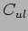
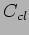

Next: Schedule quality metrics (SQM)
Up: Problem complexity metrics (PCM)
Previous: Demand profile
Contents
The load is a fairly simple metric which describes the ratio of executable time in a given observing night to the length of the night (or astronomical night). Simple load is calculated using the sum of execution times for each executable window of each group that can be executed during the night. It includes all windows of all groups whether they must be executed that night or not. An urgency weighted load  can also be calculated which weights each execution time by the reciprocal of the number of remaining nights in which the window could be observed. Critical load  is a pruned version of the normal load where only groups which must be executed that particular night are included. Priority weighted load  is calculated by taking into account all of the groups' windows which should be executed on a given observing night (as opposed to those groups which might be executed. The sum of execution times for each window is weighted by the priority of the group whose window it is. This is in effect the potential maximum value for the
is calculated by taking into account all of the groups' windows which should be executed on a given observing night (as opposed to those groups which might be executed. The sum of execution times for each window is weighted by the priority of the group whose window it is. This is in effect the potential maximum value for the  SQM and can be used to normalize this.
SQM and can be used to normalize this.
Next: Schedule quality metrics (SQM)
Up: Problem complexity metrics (PCM)
Previous: Demand profile
Contents
Steve Fraser
2008-01-31